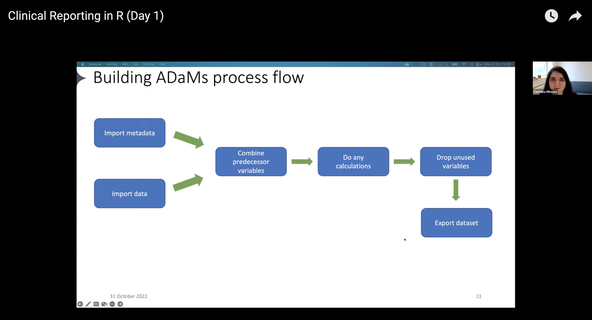
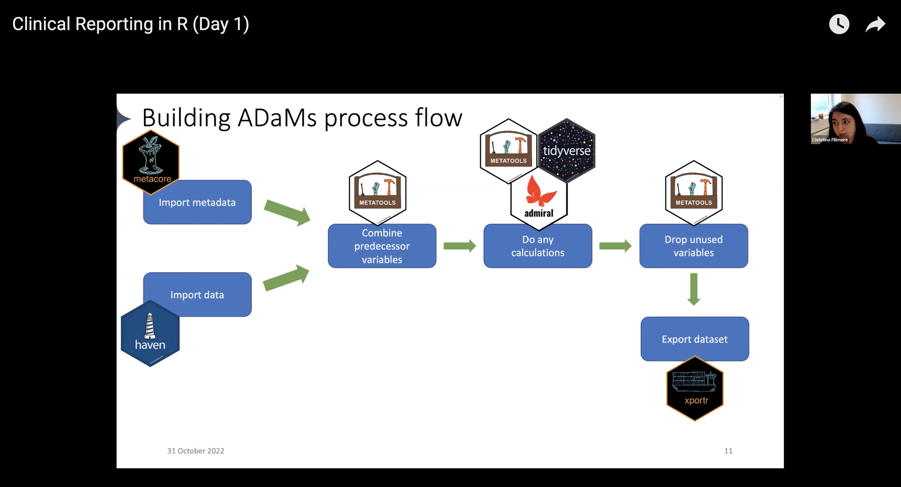

Pharmaceutical organizations must adhere to a specific set of procedures regarding their clinical trial submissions before sharing data with regulatory agencies. One crucial step in this process is the creation of subject-level analysis datasets (ADSL) and their accompanying metadata, which must comply with the Analysis Data Model (ADaM) standards.
To create ADaM datasets, a prespecified process that involves importing, tidying, and transforming data is required. Establishing a proper structure enables others to generate tables, listings, and figures more efficiently and ensures traceability. And by following this process, regulatory agencies can quickly review and approve a submission, which accelerates the release of safe and effective medicine to patients.
Creating common ADaM datasets follows a workflow that looks something like this:
Import data that would be helpful to add to your ADaMs
Pull in metadata
Combine predecessor variables
Run any calculations
Drop unused variables
Export the dataset

Example ADaM workflow, presented by Christina Fillmore
There are many different tools available that analysts can use for each step of the workflow. But often, analysts end up creating customized ways of doing things, which can be time-consuming and inefficient. Instead, it’s better to use standardized processes that can be reused across different projects. This not only saves time but also ensures consistency and accuracy in the work.
Noting this, representatives across Atorus, GSK, Janssen, and Roche started the pharmaverse, a curated stack of open-source R packages for clinical reporting. The pharmaverse is a collaboration between several pharmaceutical companies and individuals to reduce duplication efforts in clinical reporting and, ultimately, shorten the drug development process.
The pharmaverse provides analysts with a series of package to support the processes of clinical reporting, including building ADaM datasets. They don’t have to search for tools that serve their needs or create something from scratch.
With the pharmaverse, the workflow now looks like this:
Import data: use the haven package to import .sas7bdatfiles into R
Pull in metadata: use the metacore package to import and hold metadata, particularly for specifications
Combine predecessor variables together: use the metatools package to enable the use of metacore objects
Run any calculations / Drop unused variables: combine the tidyverse, metatools, and admiral for any ADaM-building needs
Export the dataset: use xportr to export files that meet clinical standards

Example ADaM workflow with respective pharmaverse package, presented by Christina Fillmore
In Part 1, we set up our project, loaded metadata using metacore, and used it to automate dataset creation. After creating and coding a few variables, we saw that a few required calculations.
The admiral package derives variables required for creating an analysis dataset in accordance with CDISC standards. Developed by representatives from Roche and GSK, this package has been available for nearly two years and has attracted additional collaborators to expand its application to other medical fields.
The beauty of admiral is its modular approach to deriving variables. A non-admiral approach would use a single function per dataset:
Instead, admiral takes one dataset, runs computations, and passes the dataset to the subsequent derivation using pipes. Instead of calling one huge function, we run small functions one by one.
vs %>%derive_vars_a() %>%derive_vars_b() %>%study_vars_x() %>%derive_params_c() %>%project_param_y() %>% ...
Below, we run through some standard derivations for ADaM datasets using the admiral package.
To continue our analysis, we import the data that we need:
dm: demographics (loaded during the metacore/metatools section)
vs: vital signs
ex: exposure
sv: study visits
ae: adverse events
pre_adsl: where the metacore section above left off
We begin by creating columns for the baseline characteristics for height and weight. The admiral function derive_vars_transposed() transposes our desired data onto our ADSL. We pick the data to merge onto (vs) and define the required parameters. Check out ??derive_vars_transposed to see the help file.
adsl_bl <- pre_adsl %>%derive_vars_transposed(select(vs, USUBJID, VSTESTCD, VSSTRESN, VSBLFL), # Dataset to transpose and merge ontoby_vars =vars(USUBJID), # Merge keyskey = VSTESTCD, # Names of transposed variables value = VSSTRESN, # Values of transposed variablesfilter = VSTESTCD %in%c("HEIGHT", "WEIGHT") & VSBLFL =="Y"# Restrict records to just height and weight ) %>%# Do some cleanuprename(HEIGHTBL = HEIGHT, WEIGHTBL = WEIGHT) %>%select(-VSBLFL) %>%mutate(BMIBL =compute_bmi(HEIGHTBL, WEIGHTBL))
Now, we want to know when the treatments start and end for our patients in ADSL. This information is available in the ex file. In particular, we want to know the first and last date someone took a dose greater than 0 or received a placebo.
Taking a quick look at our imported dataset, we see that the date variables are not dates but character values:
typeof(ex$EXSTDTC)
[1] "character"
This mismatch presents an issue for our analysis. We need to convert the character vectors representing dates into date types first. We create a new object called ex_dt that pipes the ex dataset into the derive_vars_dt() function. This function derives a date from a date-character vector, so the values are the proper type.
Checking the type of our date variables in this new dataset, we see they are now date types.
lubridate::is.Date(ex_dt$EXSTDT)
[1] TRUE
We can derive our treatment start/end dates. The derive_vars_merged() function adds new variables to the input dataset based on variables from another dataset. Within the function, we can specify what we are looking for: that we want the first dose (mode = "first"), that we want only valid records (filter_add = EXDOSE > 0 | (EXDOSE == 0 & str_detect(EXTRT, "Placebo"))), we want to order doses by specific columns (order = vars(EXSTDT, EXSEQ)), etc. The admiral package has many ways to fine-tune variables’ derivation.
We also want the last treatment date, so we pipe in another derive_vars_merged() block specifying that the mode is last.
Another common task is adding safety flags, which we can do with admiral. We will add a safety population flag, a modified intent to treat flag, and a randomization flag.
The derive_var_merged_exist_flag() helps us do this: flag a condition as TRUE if it is met (a patient received a valid dose) and FALSE if it is not (a patient did not receive a valid dose).
Like before, we can pipe our modified dataset and run derive_var_merged_exist_flag() for each flag we’d like to add.
Finally, let’s derive a variable for the last date known alive. We want to consider adverse events (ae), exposure (ex), and treatment date as our sources.
How do you look across all these to get an accurate last date known alive? The derive_var_extreme_dt() derives the first or last date from multiple sources, so we don’t have to search across datasets ourselves.
First, we create a ‘framework’ for the datasets we want to use using date_source(). This function allows us to specify the variables to consider and creates a special object to feed into derive_var_extreme_dt().
The traceability_vars parameter adds context to the derivations. It defines the domain, sequence identifier, and variable from which the last date alive came.
# From treatment start dateex_start_src <-date_source(dataset_name ="ex",date = EXSTDT,traceability_vars =vars(LALVDOM ="EX",LALVSEQ = EXSEQ,LALVVAR ="EXSTDTC" ))# From treatment end dateex_end_src <-date_source(dataset_name ="ex",date = EXENDT,traceability_vars =vars(LALVDOM ="EX",LALVSEQ = EXSEQ,LALVVAR ="EXENDTC" ))
We also want to consider adverse effects, so we also use date_source() on the ae dataset.
To finish up, we go back to metatools. With the metatools functions, we can order and select our columns based on our spec document, set variable labels, and check our data against the control terminology.
We can continue using the admiral functions to derive whatever variables we need to finish up our ADaM dataset. The modular approach makes it easy to add on. The parameters in the functions help specify what we need.
Export XPT files with xportr
The final step in the workflow is exporting the dataset to an XPT format. The xportr functions associate the essential metadata in our R data frame, allowing us to transport them to clinical data set validator applications or regulatory agencies.
And that’s it! With the pharmaverse packages, we have completed our workflow and created an ADaM dataset.
Learn more
We hope you enjoyed the second post on how to use the pharmaverse for creating ADaM ADSL with the pharmaverse. We showed only some of the available packages and functions; check out the breadth of the pharmaverse on the website and peruse the provided examples.
Again, we thank the instructors of Clinical Reporting in R for their materials. Please watch the Day 1 and Day 2 recordings for more detailed information and for walkthroughs on other parts of the clinical reporting workflow.
Join the pharma community driving innovation with open source
If you want to join the vanguard in the pharmaceutical field, register for posit::conf(2023)! We are excited to partner with R/Pharma to host their in-person program at our upcoming annual user conference. Leaders from various pharmaceutical companies such as Roche and Novartis will oversee the discussions focused on the “next-generation” open-source tooling for drug development.
We are hosting two activities specific to the pharmaceutical industry: